Префектура Исикава · Комацу и Кага · еда и архитектура
SHÓKUDŌ YArn в Комацу и баня Катаямадзу: ужин-загадка и онсэн с видом на лагуну
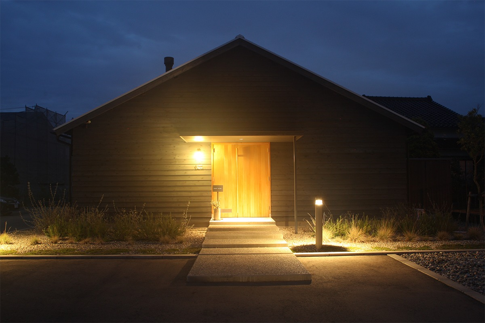
В Комацу есть ресторан, где ужин начинается с запаха деревянных палочек, а заканчивается поиском съедобного камня среди настоящих. В соседнем городе Кага, в онсэне Катаямадзу, общественную баню построил автор нового здания нью-йоркского Музея современного искусства.
Ресторан
Нить, которую плетут вдвоём
Комацу это город в префектуре Исикава, у побережья Японского моря. До войны в квартале, где в 2015 году открылся SHÓKUDŌ YArn, работало много фабрик, которые сучили нить. Английское слово yarn и значит «пряжа», «нить». Ресторан занял склад такой фабрики, принадлежавшей семье хозяйки, а от станции Комацу до него минут десять на машине.
Снаружи это скромный дом с треугольной крышей, и окон на фасаде нет, так что заглянуть внутрь невозможно. Дверь не открывается до начала работы. Внутри пространство разделено стеклом на три комнаты, и через них видно кухню в глубине. Ресторанный критик, которая писала о SHÓKUDŌ YArn в 2020 году, сравнила его с лабораторией из школьного кабинета естествознания.
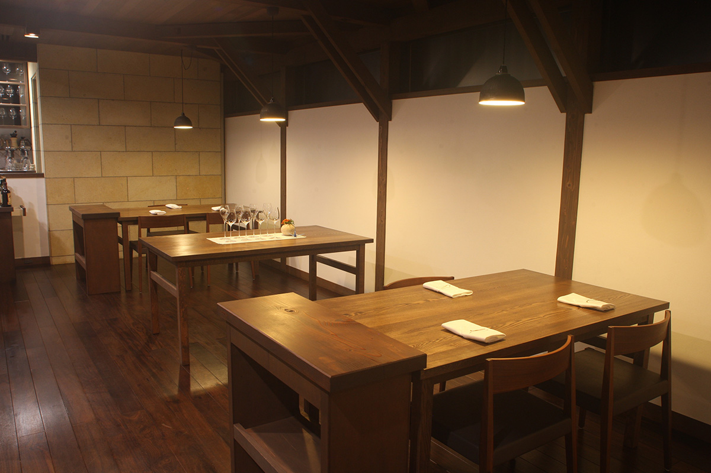
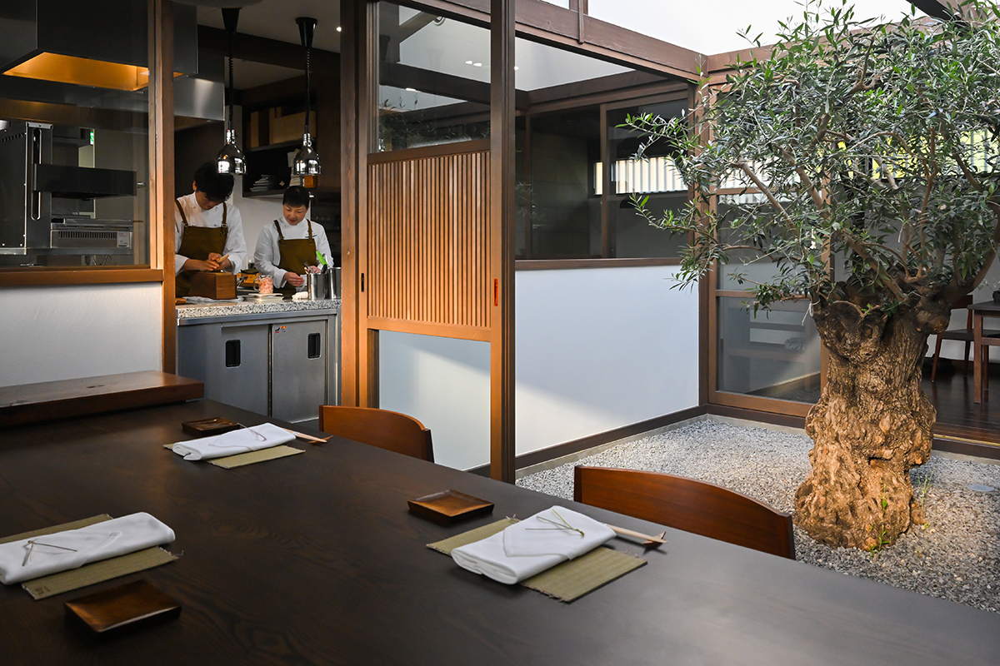
Столы стоят вокруг оливы, которой около 200 лет: она растёт во внутреннем дворике высотой во всё здание. В 2023 году ресторан принимал всего по три компании гостей на обед и на ужин, а бронь открывалась за два месяца. Землю, вынутую во время перестройки здания, хозяева пустили на собственную посуду.
Юдзи Ёнэда и Асами Ёнэда родились в 1976 году в префектуре Исикава и учились в одном классе старшей школы. Оба выбрали точные науки: он окончил факультет естественных наук университета Канадзавы, она факультет медицинской гигиены другого университета и работала эрготерапевтом в больнице. В октябре 2000 года Юдзи уехал в Италию и прошёл через пять ресторанов, в том числе отмеченных звёздами. В 2003 году к нему приехала Асами. С 2006 года они работали в Испании, где Юдзи стоял за рыбными и мясными станциями и дорос до шефа отдела.
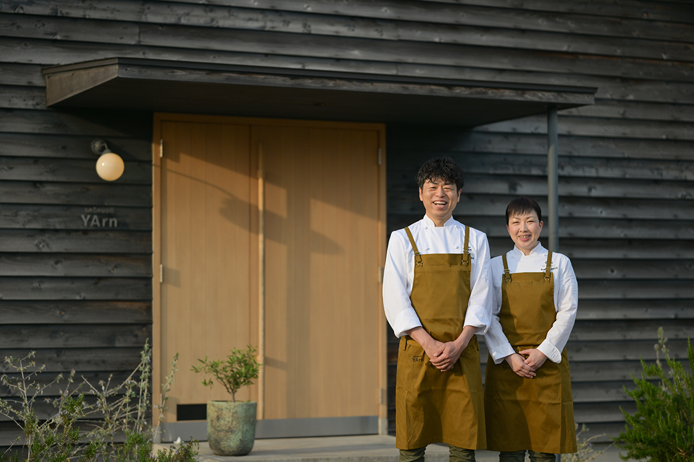
В 2007 году пара вернулась домой. Юдзи стал шеф-поваром японского ресторана в Исикаве и даже получил право разделывать фугу. Асами работала в кондитерской и пекарне и растила троих детей. В августе 2015 года они открыли собственное заведение: он шеф, она кондитер и хозяйка зала.
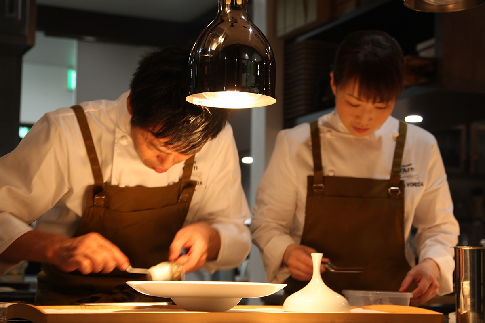
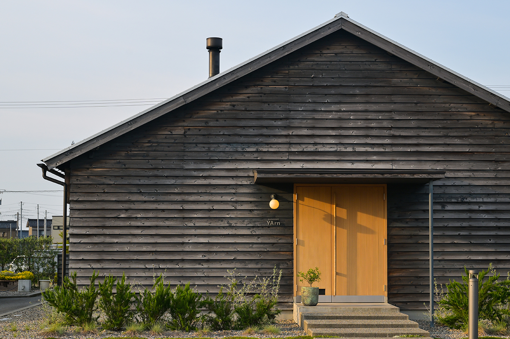
Курс
Ужин из загадок, 2020 год
Что это за кухня? Ответить трудно. Здесь сходятся итальянская и испанская школа, японская кухня и местные блюда Исикавы и самого Комацу. Критик назвала главные достоинства ресторана так: остроумная подача, тщательно продуманные названия и верность местным продуктам и ремёслам. Громкой гастрономии, которая кричит «смотрите, как мы умеем», здесь нет. Каждое блюдо скорее шепчет: «Правда, забавно?»
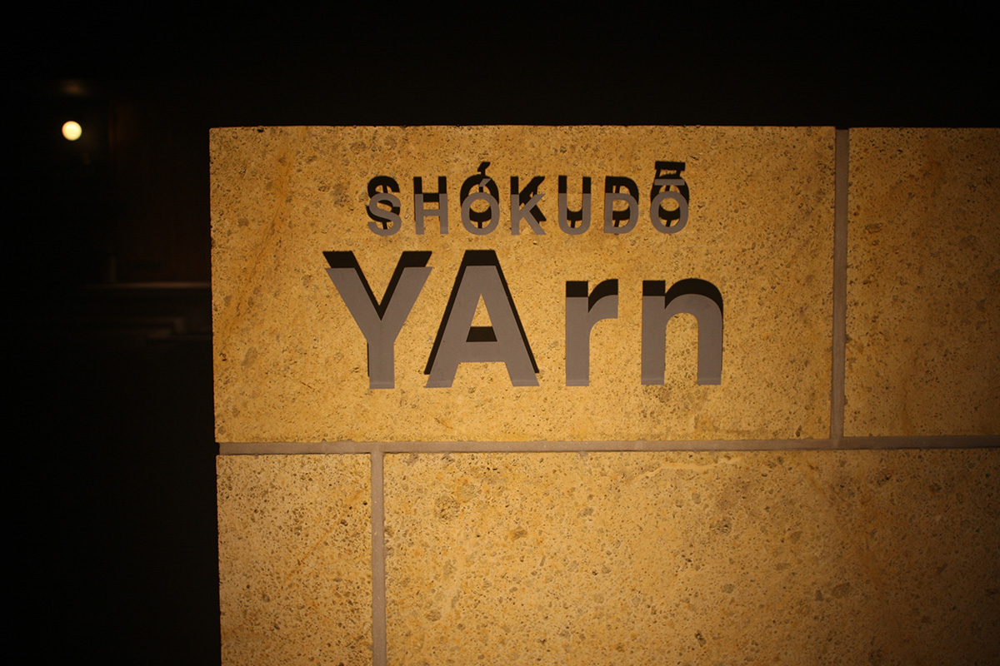
Ужин начинается ещё до еды. На столе лежат палочки из ате, нотоской хибы. Это дерево префектуры Исикава, а палочки делают в рамках проекта по повторному использованию древесины. У ате антибактериальные свойства и запах, который убирает посторонние ароматы. «Палочки не едят, но почувствуйте их запах и наслаждайтесь следующими тремя часами», говорят гостям. Палочки можно забрать домой.
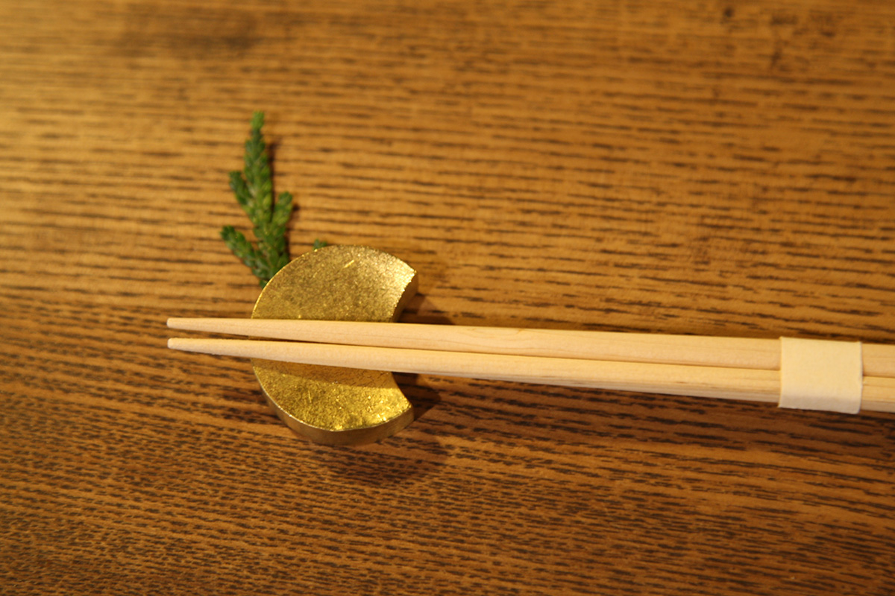
Следом Асами подходит к каждому столу и взбивает «Махито», матча в духе мохито. В густой чай из лавки в канадзавском квартале Хигасияма она добавляет имбирный эль, мяту и лайм. К нему подают нэрикири из рисовой муки Исикавы с инжиром внутри и два вида хамона из иберийской свиньи. Получается шуточная чайная церемония, но матча неожиданно свежая, а сладость нэрикири отлично ладит с солоноватым хамоном. Меню закуски меняется раз в сезон.
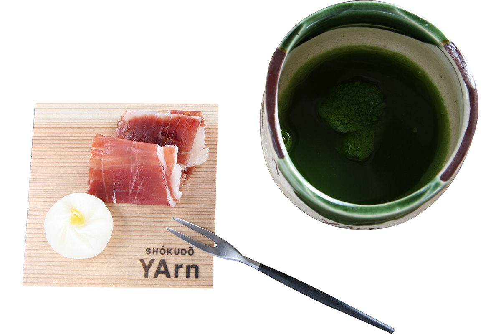
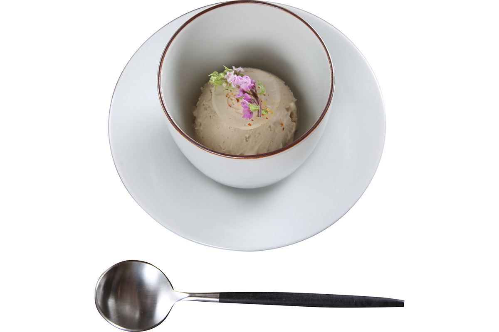
Закуска дня «Дасипрессо» устроена как аффогато. Мороженое из сухожилий говядины Ното-гю класса A5 заливают горячим соусом. Бульон из выдержанной сушёной рыбы кацуобуси и комбу Раусу шеф варит в ручной эспрессо-машине, и он выходит с кремовой пенкой.
Скьяччатина, лепёшка из итальянской области Ломбардия, здесь своя: в неё щедро добавлен редкий японский чёрный кунжут. Шеф выкупает весь урожай у фермера из Комацу. Название обыгрывает японское «гома», кунжут. Тушёная тыква приходит в форме плитки шоколада: зелёную кожуру и жёлтую мякоть отдельно готовят на пару, смешивают с какао-маслом, приправляют соевым соусом, сахаром и мирином, разминают и отливают в форму.
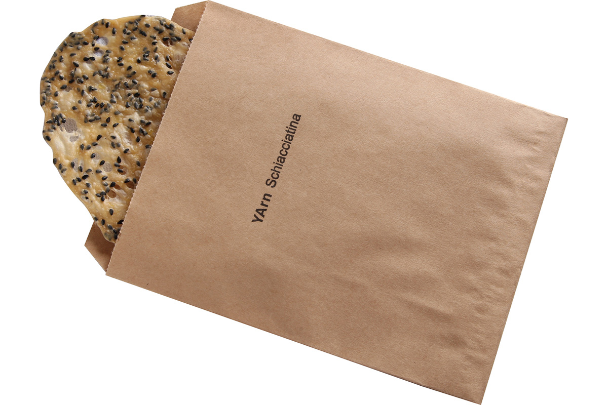
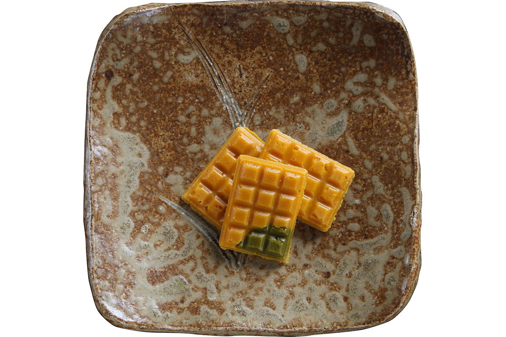
В «Гэммайтя и о-никуруми» название складывается из «нику», мяса, и «куруми», грецкого ореха. Оболочку моти-вафли монака заказывают в Канадзаве с крупно молотым перцем внутри и наполняют рубленой свининой Ното, порошком чая гэммайтя от чайной фабрики из Каги и орехами, а потом запекают. Название блюда «Are you wild» построено на созвучии: первые слова звучат почти как «аю». Это дикая рыба аю, пойманная сетью в здешних реках. Её жарят во фритюре живой, поэтому плавники расправлены и рыба стоит на тарелке. Белый соус айоли сделан из чеснока и мяты, которую шеф выращивает сам.
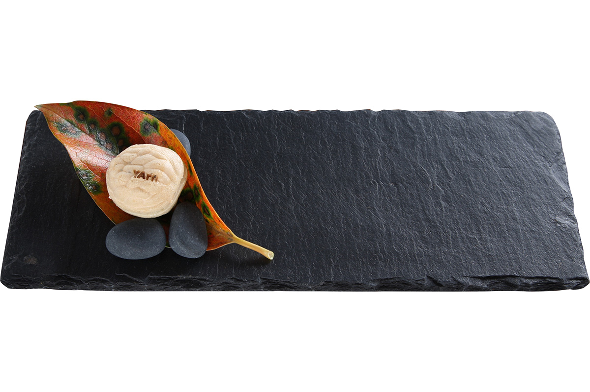
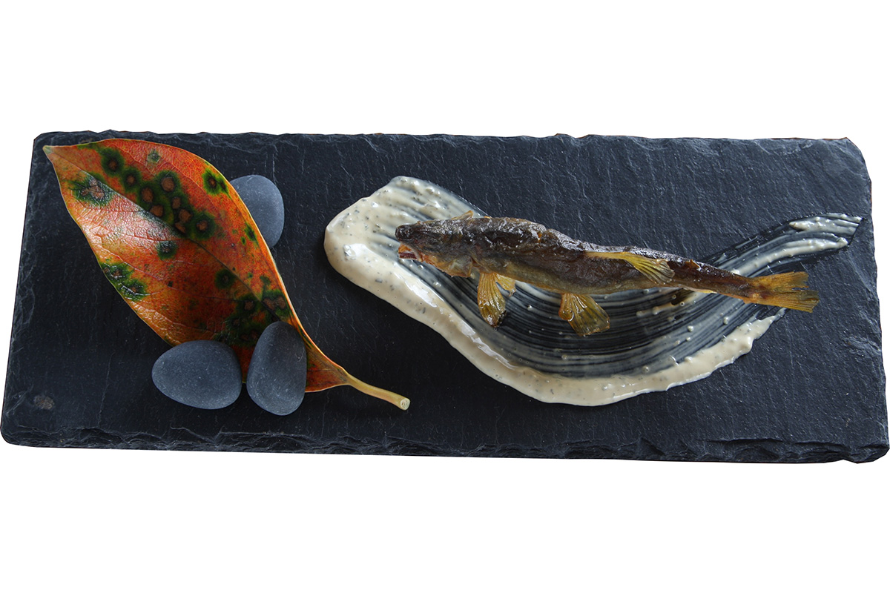
Блюдо, которое лучше всего рассказывает о работе шефа, называется «The Only WAN with not matsu only». «Ван» по-японски чаша для супа, «мацу» напоминает о грибах мацутакэ. В суп кладут клёцку синдзё со стружкой мацутакэ. Строгать мацутакэ в японской кухне не принято, говорит шеф, но так аромат гриба становится ярче.
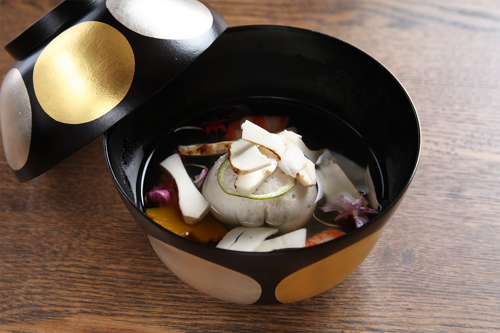
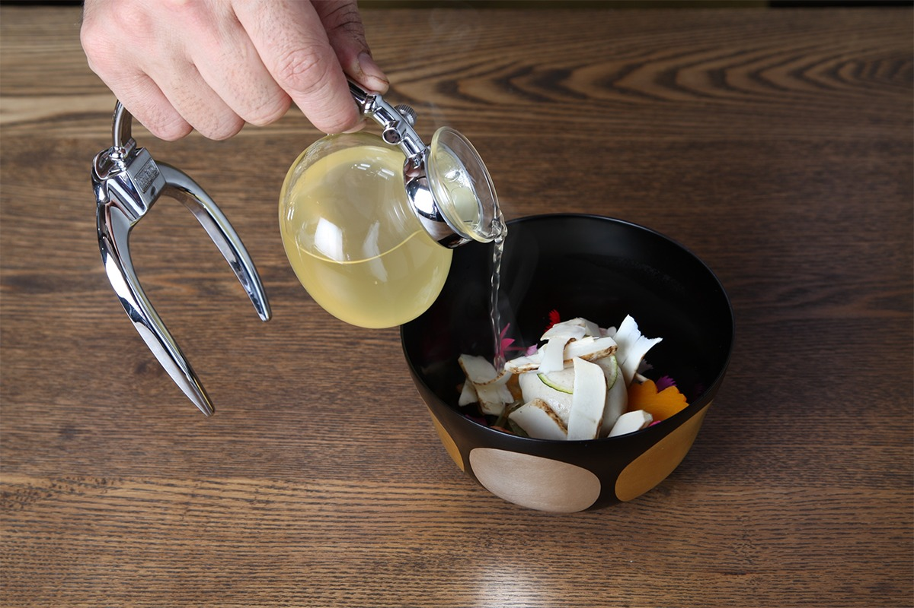
Финал
Говядина, лапша и съедобный камень
Вторая половина ужина ещё смелее. «Никудзяга», домашнее японское рагу из мяса и картофеля, здесь собрано из пяти сортов картофеля Ното, среди них «Инка-но мэдзамэ», «Нозерн руби» и «Шэдоу куин». Картофель готовят на пару, смешивают с первым бульоном даси в пюре и формуют шарики, сверху кладут конняку и лук, а снизу рагу из говядины. Шарики тают во рту, и знакомое блюдо кажется совсем новым.
Название «Сарада!» значит и «салат», и «это же тарелка!». Идею шеф взял из шутки, которой развлекались повара на его прежних кухнях: бокал затягивали плёнкой, и тот, кто не замечал, проливал вино. На одной тарелке лежат ломтики лука, пюре авокадо, прозрачное желе из томатов Комацу и «ринготто», итальянская икра, похожая на карасуми. Вторую тарелку приносят перевёрнутой и затянутой плёнкой: под ней овощи и цветы, пропитанные бульоном из комбу Раусу. Их выращивают шеф и его мать. Перевернёшь тарелку, и овощи лежат как гербарий. На тарелке маркером написано «Сарада!».
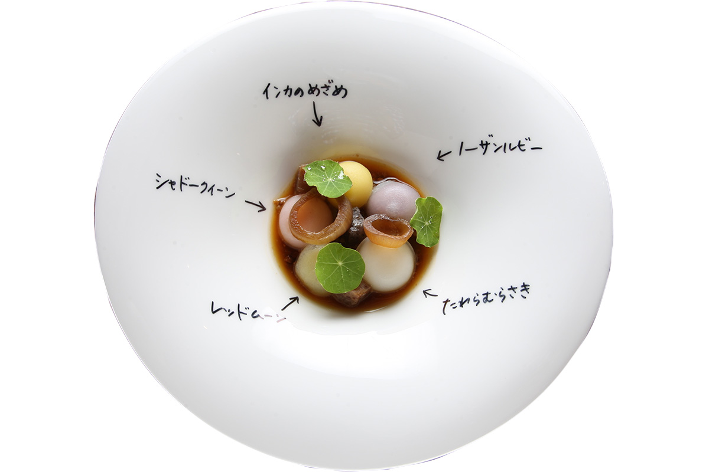
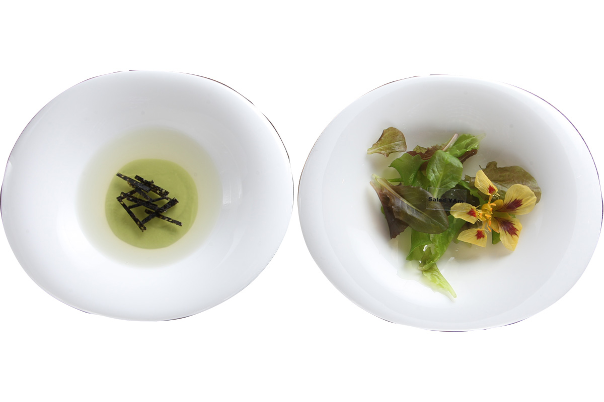
В «Кабомасу» встречаются кабосу, японский цитрус, и камасу, барракуда. Зимнюю барракуду из местных вод не жарят, а готовят на пару и сворачивают рулетиком. Её приправляют порошком юдзу-косё из жёлтого юдзу, укропом и кервелем, сверху кладут редис Ното и бегонию. Снизу эноки из Комацу, грибы майтакэ, которые растят у дома шефа под музыку Моцарта, хризантемовая зелень и арахис. Холодную пену понзу на соке кабосу подают отдельно и поливают перед самой едой.
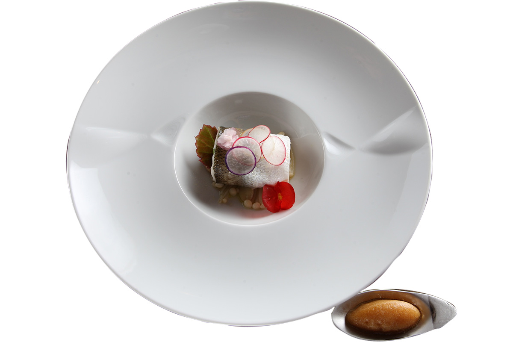
Главное горячее называется «Гобо-но котя», «чай из лопуха». Сначала варят бульон из корня лопуха гобо: во френч-пресс кладут сушёную стружку гобо и обожжённый на углях лук и заливают бульоном из сушёных шиитаке, грибов и сои. Филе говядины Ното-гю высшего сорта A5 на ночь заворачивают в комбу Раусу, потом жарят и коптят на ветках яблони. В чашу кладут мясо, микрозелень и цветы и заливают бульоном.
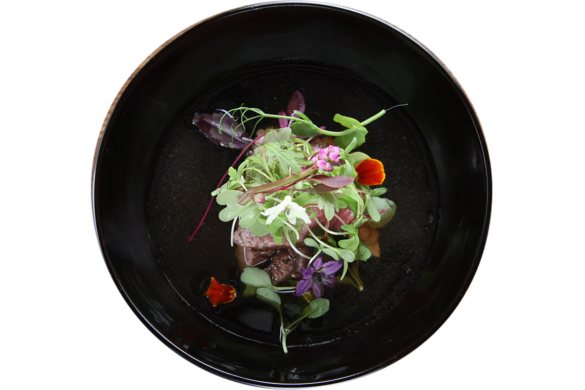
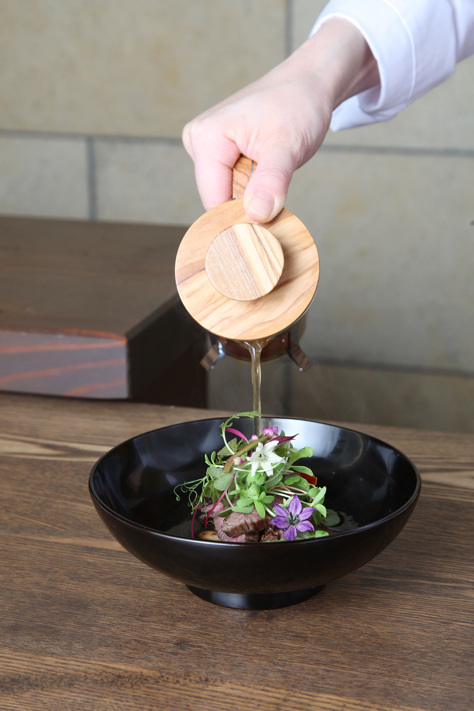
На этом блюдо не кончается. В оставшийся бульон гость макает «Нихати сопасту», помесь лапши соба и пасты. Гречневую муку из Судзу и Мондзэна на полуострове Ното специально для YArn мелют на каменных жерновах целым зерном, а в 2020 году шеф брал новую гречку старого местного сорта с севера Ното. Лапшу из гречки, муки из твёрдой пшеницы, яиц свободного выгула и оливкового масла шеф раскатывает каждое утро. Мясо, а потом лапша в том же бульоне: блюдо из двух тарелок, такой финал встретишь нечасто.
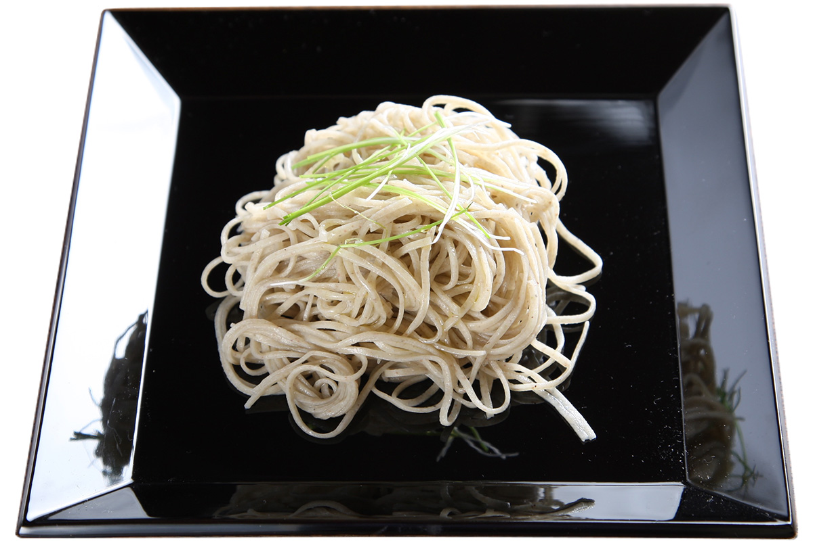
Потом приносят «Сезонную таблетку», маленький прессованный кружок. От воды он разбухает и превращается во влажное полотенце, во время съёмки пропитанное ароматом лаванды. Пудинг подают в коробке для бэнто: карамель в крошечном тюбике, а сам пудинг похож на японский омлет тамагояки. Яйца для него берут на ферме в Каге, где кур держат на свободном выгуле. Цвет у пудинга бледный, а вкус насыщенный.
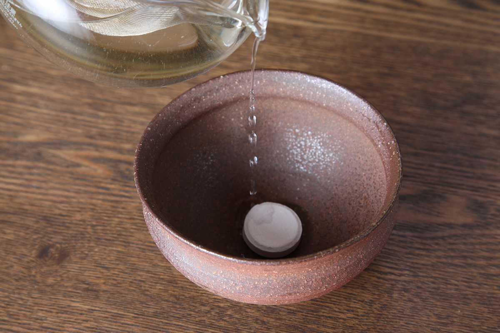
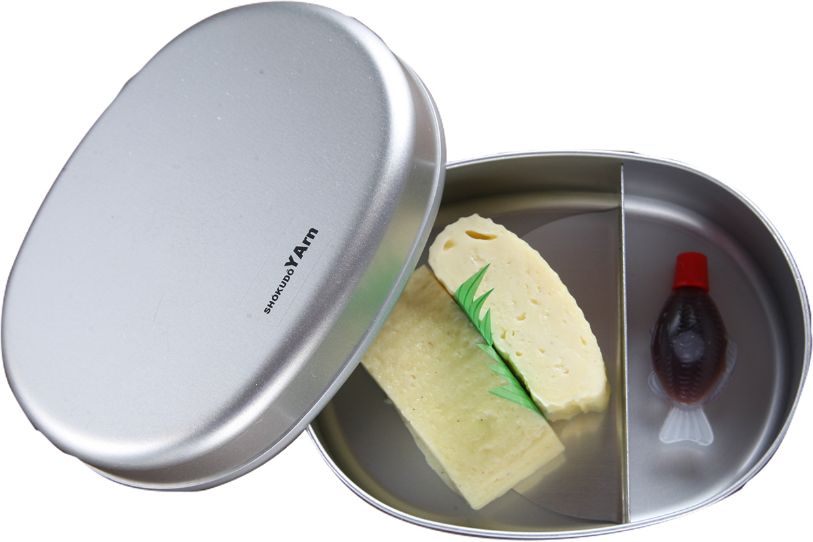
Мороженое с дымным ароматом угля бинтётан из Кисю подают с местным чёрным инжиром. Его заворачивают в инжировый лист и фольгу и кладут прямо на угли, и мякоть становится тягучей. Дроблёные какао-бобы добавляют хруста.
В комплименте к кофе прячется последняя шутка. Среди чёрных камней один съедобный: орех макадамия в карамели, покрытый белым шоколадом с порошком бамбукового угля. Отличить его от настоящих почти невозможно. Сердечки внутри вырезаны в деревянной форме для ракугана, которую по заказу ресторана сделал мастер со званием «Выдающийся мастер современности». Это испанское печенье польворон на миндале марконы, оливковом и кунжутном масле, фисташковом масле и сахаре васанбон. В квадратном деревянном стаканчике масу подают каштановый крем-брюле.
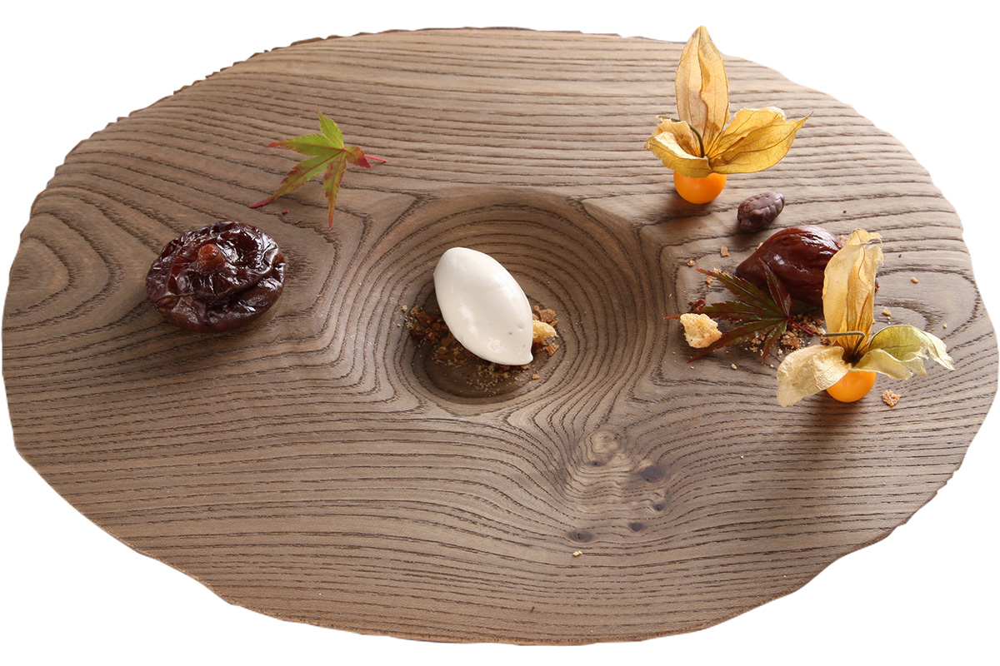
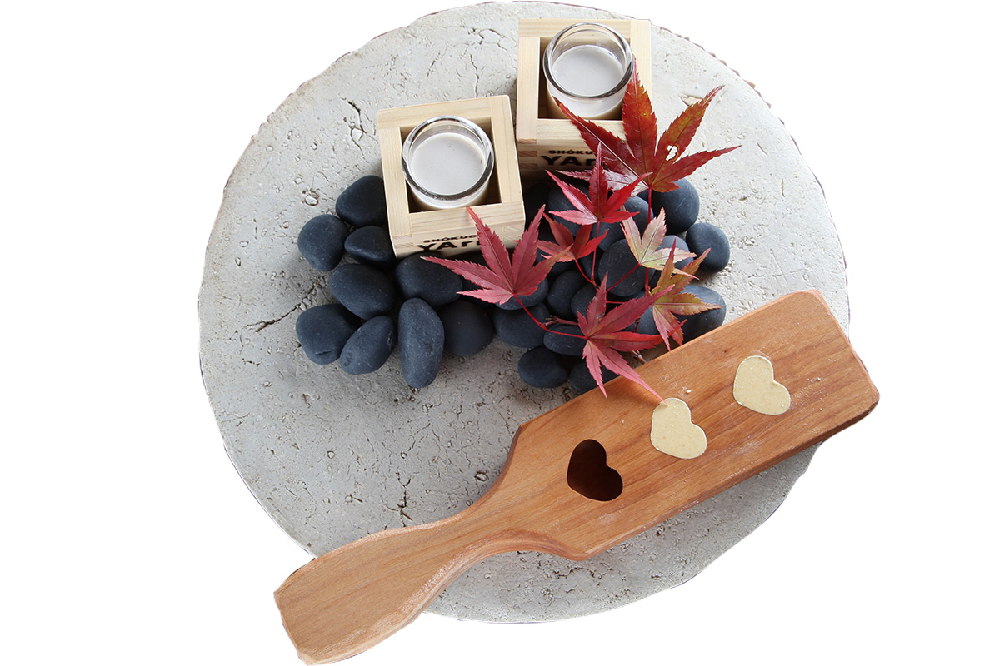
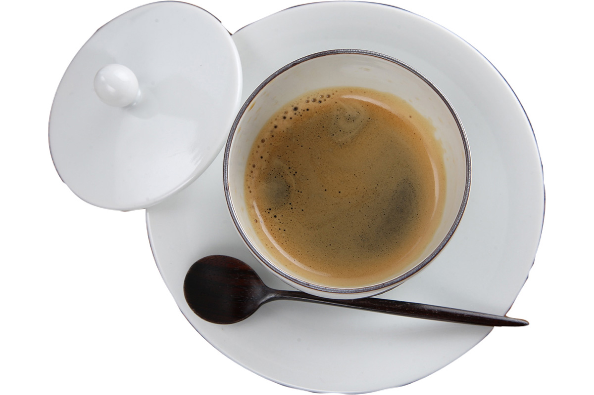
2023
Знакомые вкусы в новой сборке
В 2023 году кухня YArn осталась такой же изобретательной. Курс начинается с закуски, которую шеф собирает у каждого стола. В мае это была маленькая версия темпуры из листьев сисо: в чашке слоями лежат мороженое из сисо, желе из бульона для темпуры, имбирь, и вместе они дают вкус жареного листа. Шеф разбирает привычный японский вкус на части и собирает его заново.
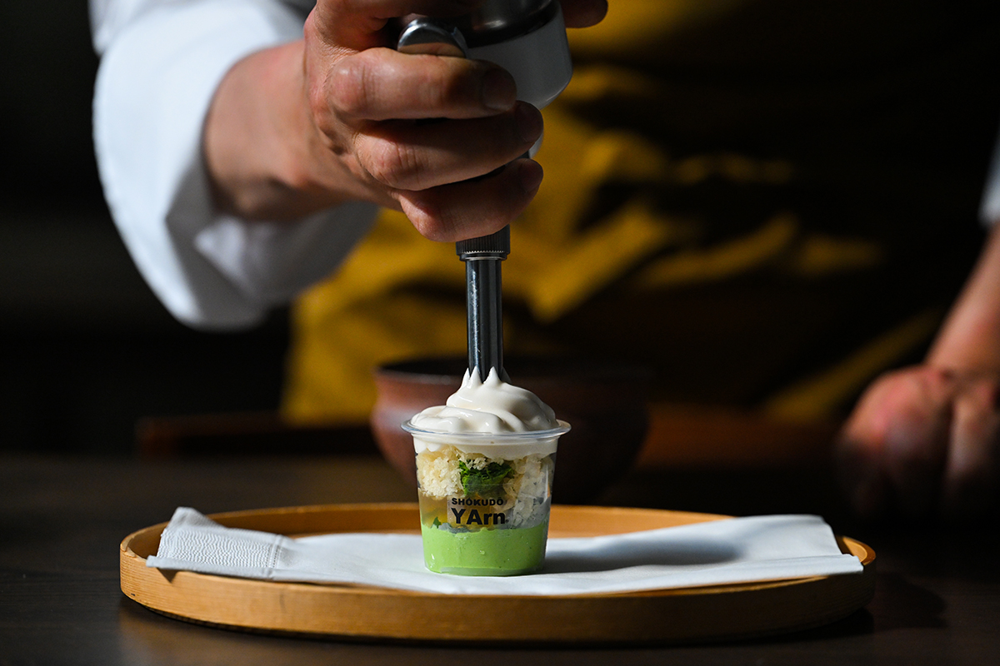
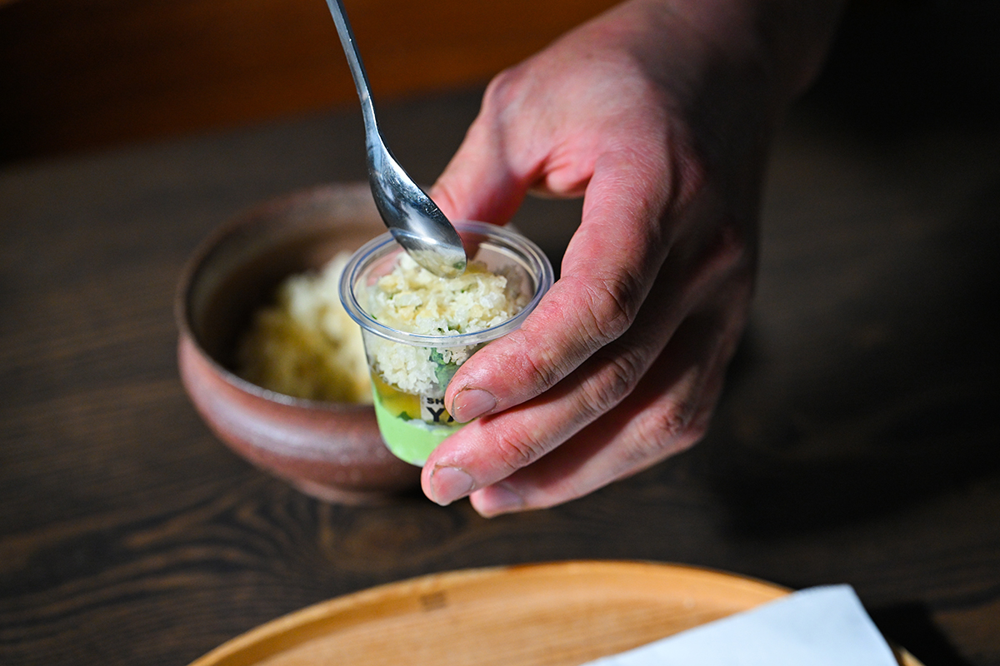
Молодых аю в маринаде нанбан здесь делают лёгкими и хрустящими. Блюдо называется «Are you child No.2K», и это тоже игра слов: если прочитать название вслух, в нём слышится «аю» и намёк на молодую рыбу. На тарелке рыбки лежат с речными камнями: так шеф изображает аю, которые поднимаются вверх по реке Тэдори.
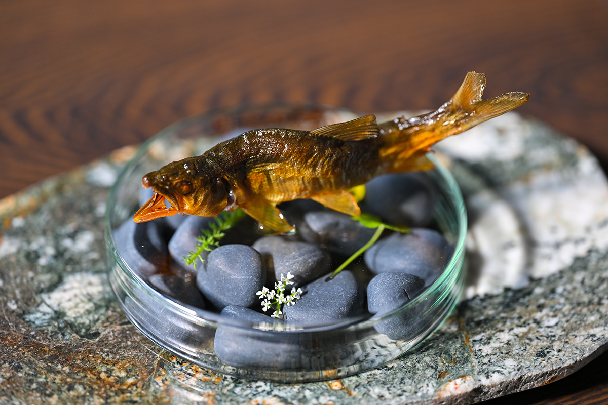
Горячую лапшу гость доводит до готовности сам, словно варит кофе: вскрывает пакет, кладёт в чашку свежую стружку сушёного тунца и заливает её бульоном из комбу. Блюдо с домашней лапшой, китовым мясом и сушёным зелёным луком называется «Хоэру то каппу-рамэн». Название тоже каламбур: «хоэру» значит «реветь» и созвучно английскому слову «кит».
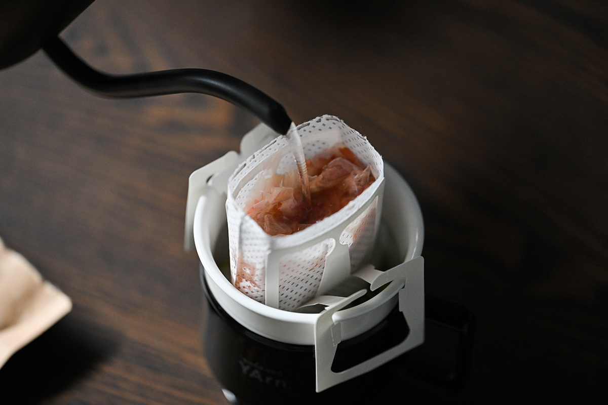
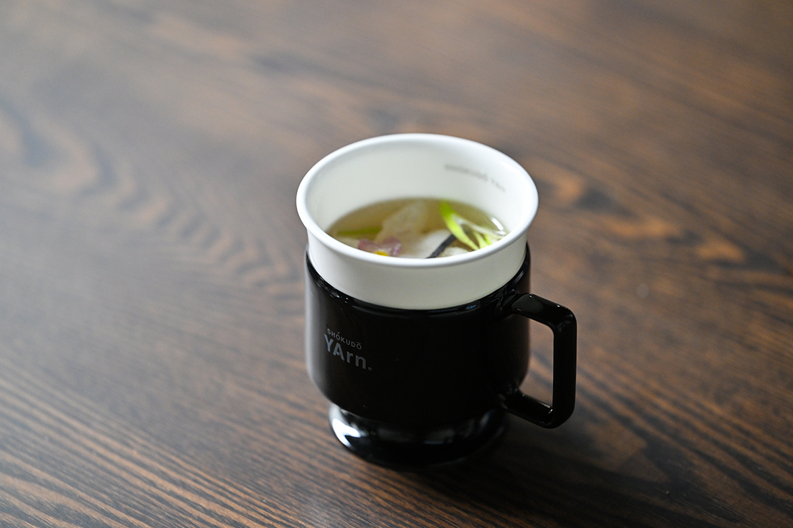
Десерт «Сэнтян-но тама» изображает кокэдаму, шар из мха. Подсоленная тапиока, пюре манго, мороженое из местного зелёного чая сэнтя с начинкой из пасты на хересе и чёрном сахаре, а «мох» сделан из чайного бисквита шифон. Посуду для него из земли ресторана сделала мастерица из Канадзавы.
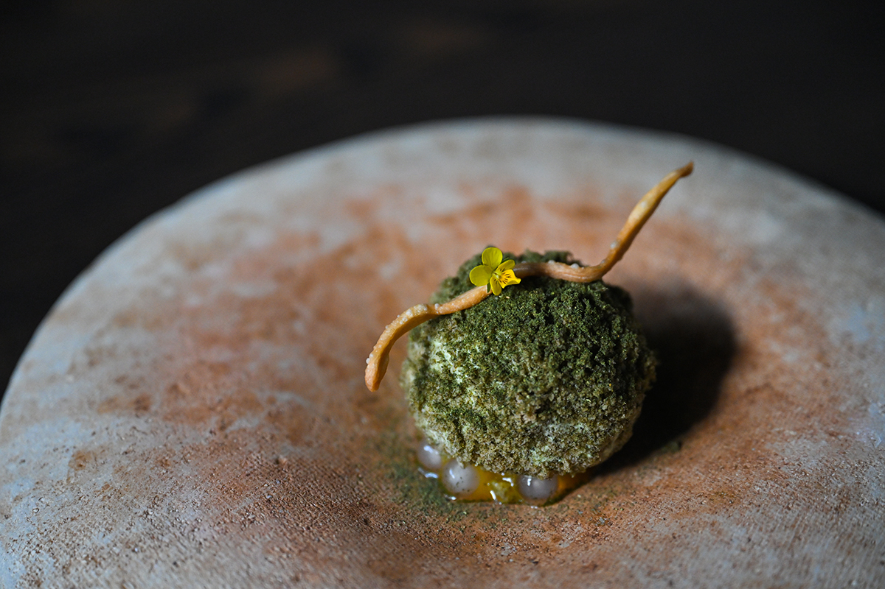
Почти все продукты, от овощей до риса, приходят из Комацу и других мест Исикавы. Супруги хотят, чтобы гости узнали о местных продуктах и ремёслах: в посуде, в палочках, даже в форме для сладостей. Новое меню они придумывают почти каждый месяц, и идеи приходят где угодно, в магазине или в кино.
«Нам хочется, чтобы гости участвовали в еде, а не только ели: рвали плёнку, переставляли посуду. Пусть ужин в ресторане запомнится как весёлое приключение»
хозяева ресторана
В 2020 году обед стоил 5000 иен или 10 000 иен (второй вариант только по воскресеньям), ужин 8000 или 13 000 иен без налога и сервисного сбора. В 2023 году обед из 13 блюд стоил 12 000 иен, ужин из 15 блюд 18 000 иен.
SHÓKUDŌ YArn
- Адрес
- префектура Исикава, Комацу, Ёситакэ-мати, 1-37-1
- Телефон
- +81 761-58-1058
- Часы работы
- 12:00–14:30 (вход в 12:00), 18:00–23:00 (вход до 19:00), по предварительной записи
- Выходные
- понедельник и воскресенье
- Цены / Вход
- обед из 13 блюд 12 000 иен, ужин из 15 блюд 18 000 иен (2023 год); бронь за два месяца
- Сайт
- shokudo-yarn.com
Онсэн
Баня, похожая на музей
Онсэн Катаямадзу находится в соседнем с Комацу городе Кага. Горячие источники бьют прямо со дна лагуны Сибаяма, одного из трёх озёр Каги. Жители города много лет ходят в соую, общественную баню в квартале онсэна. Так называют общую баню на курорте, хотя в разных местах название звучит по-разному. Баню не раз перестраивали из-за ветхости, и в шестой раз её перенесли на новое место. Открылась она там в 2012 году.
Здание спроектировал Ёсио Танигути (1937–2024), архитектор нового корпуса Музея современного искусства в Нью-Йорке и зданий Токийского национального музея. Он сделал баню похожей на музей, и посмотреть на неё приезжают не только местные, но и гости со всей Японии.
Двухэтажное здание целиком из стекла. Линии прямые и городские, но дом не спорит с пейзажем вокруг. Внутри всё белое, свет из окон делает пространство ярким и открытым. На первом этаже две купальни, и каждая показывает свою сторону этого места. «Ката-но ю» обращена к лагуне: если погрузиться по плечи, граница между горячей водой и озером почти исчезает. В «Мори-но ю» в воде отражается зелень сада.
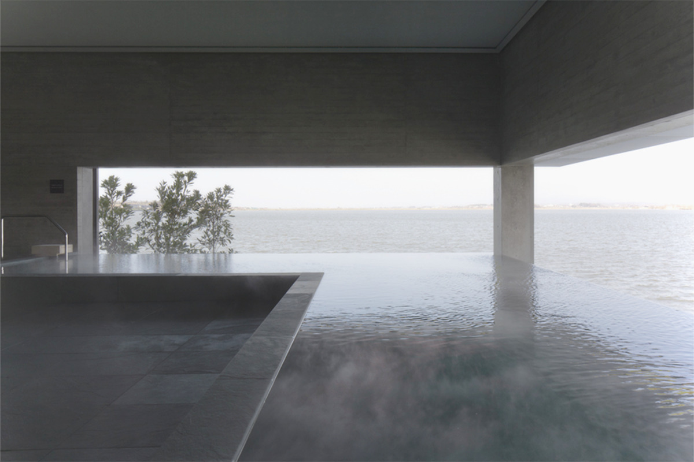
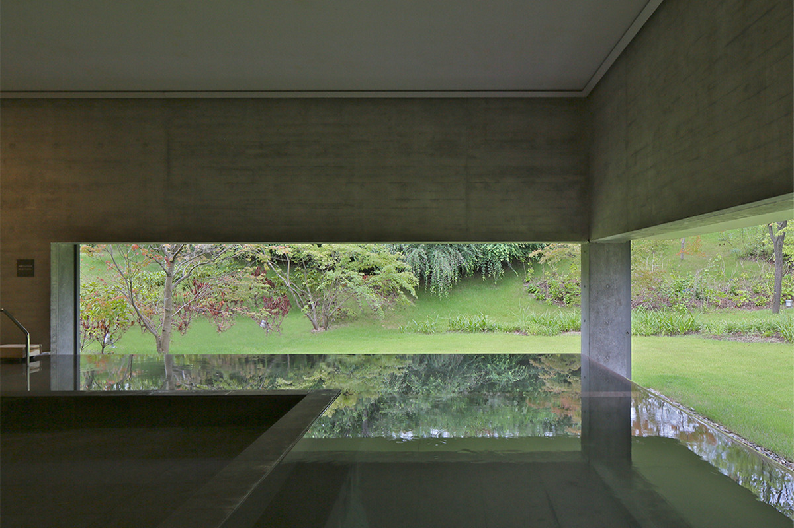
На втором этаже тоже две террасы. С той, что смотрит на лагуну, ничто не заслоняет вид на воду. Вторая расположена прямо над «Мори-но ю», и перед ней спокойная зелень деревьев. Здесь работает кафе с чаем и сладостями, и с 2012 года баня стала местом, где встречаются жители и путешественники. В 2023 году вход для взрослых стоил 490 иен. Купальни по дням меняются между мужской и женской половиной, мыла и шампуня нет, их надо брать с собой.
Кага Катаямадзу онсэн Соую
- Адрес
- префектура Исикава, Кага, Катаямадзу-онсэн, 65-2
- Телефон
- +81 761-74-0550
- Часы работы
- 6:00–22:00
- Выходные
- без выходных (бывают закрытия на обслуживание)
- Цены / Вход
- взрослые 490 иен; мыла и шампуня нет
- Сайт
- sou-yu.net
Фото: Мунэаки Маэда, Такаси Гоми.